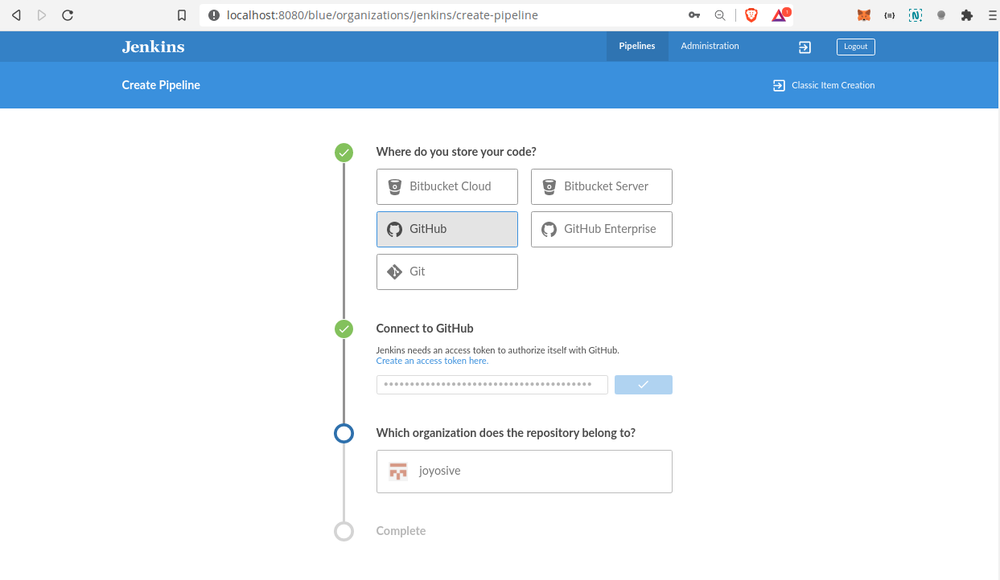

Lab 5 (Group Lab)¶
Team Members
Jalmeen (Joy)
Natasha Rupani
Integration of GitHub with Jenkins¶
Go to Jenkins UI and Open Blue Oceans
Create a new Pipeline
Select the remote version control system from available options & connect Jenkins to the remote VCS via personal access token
Owner of the repository can go to https://github.com/settings/profile
Click on personal access token
Click Generate new token
Make the scope selection as shown.
Copy personal access token

Paste the personal access from clipboard
Select your username / organisation.

Click on create pipeline.
Once build is triggered via GitHub repository